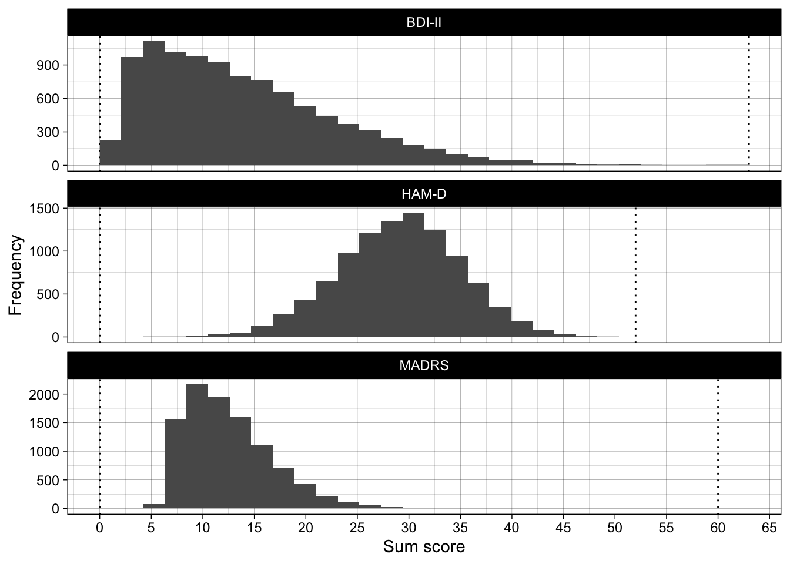
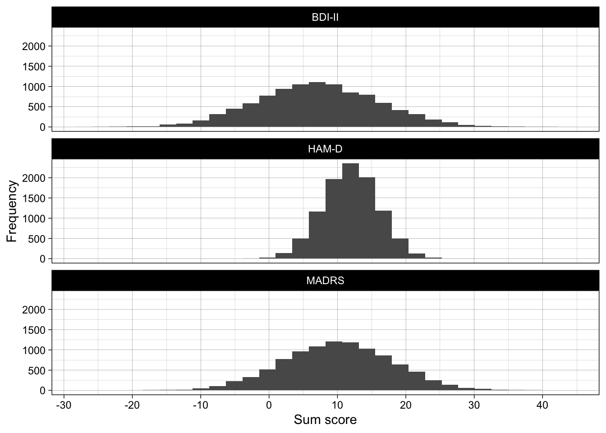
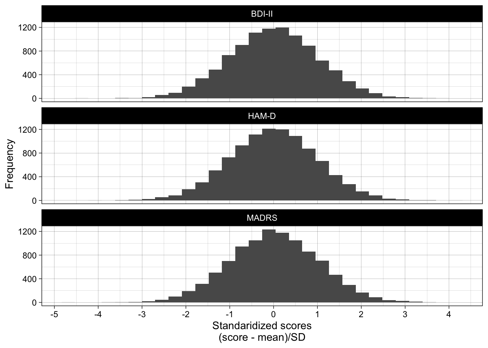

Code
library(tidyverse)
library(scales)
library(sn)
library(janitor)
library(effsize)
library(knitr)
library(kableExtra)
library(faux)library(tidyverse)
library(scales)
library(sn)
library(janitor)
library(effsize)
library(knitr)
library(kableExtra)
library(faux)Real BDI-II data is taken from Cataldo et al. (2022) Abnormal Evidence Accumulation Underlies the Positive Memory Deficit in Depression, doi: 10.1037/xge0001268.
data_bdi <- read_csv("../data/bdi_data.csv")They have different possible ranges, different population means (\(\mu\)), and different population SDs (\(\sigma\)).
Even if had perfect that a given therapy has a (population) efficacy of lowering BDI-II depression scores by 6 points, without knowing a lot about the relationships between the BDI-II and other scores, we know little about how many points the same therapy would affect depression scores on the MADRS or the HAM-D.
(surprisingly, very little work is ever done to collect information on the relationship between different scores so that we could know this)
Imagine three different published RCTs, each of which studied the efficacy of the same form of cognitive behavioral therapy for depression:
What is the efficacy of the intervention for depression scores on the PHQ-9? This is impossible to answer without knowing a lot about the details of the different scales (e.g., their min/max scores), the distribution of each scale’s scores in the population (eg population \(\mu\) and \(\sigma\)), and the relationship between different depression scales in the population. A one-point-change on one scale likely has a very different meaning to a one-point-change on another scale.
What is the efficacy of the intervention for depression in general? This too is impossible to answer as there is no common scale between them.
‘Standardized’ effect sizes are useful here as they provide common units. Instead of points on the self-report scale (i.e., sum scores), which differ between scales, standardized effect sizes generally use Standard Deviations as their units. For example, Cohen’s d = 0.2 means that there are 0.2 Standard Deviations of difference between the two groups.
In principle, standardized effect sizes are extremely useful as they allow us to draw comparisons between studies using very different outcome measures, or indeed to synthesise results between such studies (i.e., meta-analysis).
Semi-realistic depression scores on different scales.
N <- 10000
generated_data <-
bind_rows(
tibble(measure = "BDI-II",
score = rsn(n = N,
xi = 2, # location
omega = 15, # scale
alpha = 16),
max_score = 63), # skew
tibble(measure = "HAM-D",
score = rsn(n = N,
xi = 33, # location
omega = 7, # scale
alpha = -1),
max_score = 52), # skew
tibble(measure = "MADRS",
score = rsn(n = N,
xi = 7, # location
omega = 7, # scale
alpha = 9),
max_score = 60) # skew
) |>
mutate(score = case_when(score < 0 ~ 0,
score > max_score ~ max_score,
TRUE ~ score))
ggplot(generated_data, aes(score)) +
geom_vline(aes(xintercept = 0), linetype = "dotted") +
geom_vline(aes(xintercept = max_score), linetype = "dotted") +
geom_histogram(boundary = 0) +
scale_x_continuous(breaks = breaks_pretty(n = 10)) +
facet_wrap(~ measure, ncol = 1, scales = "free_y") +
theme_linedraw() +
ylab("Frequency") +
xlab("Sum score")
For the moment, let’s pretend like these scales produce continuous normal data that only differ in their population location (\(\mu\)) and scale (\(\sigma\)):
generated_data <-
bind_rows(
tibble(measure = "BDI-II",
score = rnorm(n = N, mean = 7, sd = 9),
max_score = 63),
tibble(measure = "HAM-D",
score = rnorm(n = N, mean = 12, sd = 4),
max_score = 52),
tibble(measure = "MADRS",
score = rnorm(n = N, mean = 10, sd = 8),
max_score = 60)
)
ggplot(generated_data, aes(score)) +
geom_histogram() +
scale_x_continuous(breaks = breaks_pretty(n = 10)) +
facet_wrap(~ measure, ncol = 1) +
theme_linedraw() +
ylab("Frequency") +
xlab("Sum score")
A one-point change on the BDI-II still means something very different to a one-point change on the MADRS or HAM-D.
Data for a single sample can be standardized by taking each participant’s score, deducting the mean score (the sample estimate of \(\mu\)), and then dividing by the SD of scores (the sample estimate of \(\sigma\)). Now, all scales have a mean of 0 and an SD of 1. A one-point change on any scale has the same interpretation: a one-standard deviation change on that scale’s scores:
generated_data <-
bind_rows(
tibble(measure = "BDI-II",
score = rnorm(n = N, mean = 0, sd = 1),
max_score = 63),
tibble(measure = "HAM-D",
score = rnorm(n = N, mean = 0, sd = 1),
max_score = 52),
tibble(measure = "MADRS",
score = rnorm(n = N, mean = 0, sd = 1),
max_score = 60)
)
ggplot(generated_data, aes(score)) +
geom_histogram() +
scale_x_continuous(breaks = breaks_pretty(n = 10)) +
facet_wrap(~ measure, ncol = 1) +
theme_linedraw() +
ylab("Frequency") +
xlab("Standaridized scores\n(score - mean)/SD")
Yay, now we have scores that can be compared between scales, e.g., in a meta-analysis.
How can this go wrong?
Note that in the below, only data at pre is real BDI-II data. Data at post is modified data (i.e., offset by known amounts).
set.seed(42)
subset_no_preselection <- data_bdi |>
rename(control = bdi_score) |>
# simulate a 'intervention' score that is 5 points lower than pre
mutate(intervention = control - 5) |>
# sample 100 participants from the real data
slice_sample(n = 100) |>
mutate(recruitment = "General population") |>
# reshape
pivot_longer(cols = c(control, intervention),
names_to = "condition",
values_to = "bdi_score") |>
mutate(condition = fct_relevel(condition, "control", "intervention"))
subset_preselection_for_severe <- data_bdi |>
rename(control = bdi_score) |>
# simulate recruitment into the study requiring a score of 29 or more at pre ("severe" depression according to the BDI-II manual)
filter(control >= 29) |>
# simulate a 'intervention' score that is 5 points lower than pre
mutate(intervention = control - 5) |>
# sample 100 participants from the real data
slice_sample(n = 100) |>
mutate(recruitment = "'Severe' depression") |>
# reshape
pivot_longer(cols = c(control, intervention),
names_to = "condition",
values_to = "bdi_score") |>
mutate(condition = fct_relevel(condition, "control", "intervention"))bind_rows(subset_no_preselection,
subset_preselection_for_severe) |>
mutate(recruitment = fct_relevel(recruitment, "General population", "'Severe' depression")) |>
## plot
ggplot(aes(bdi_score)) +
geom_histogram(boundary = 0, bins = 21) +
scale_fill_viridis_d(begin = 0.3, end = 0.7) +
theme_linedraw() +
coord_cartesian(xlim = c(-5, 63)) +
facet_grid(condition ~ recruitment) +
xlab("BDI-II sum score") +
ylab("Frequency")
Exercise:
For each of the two datasets, please calculate:
effsize::cohen.d()).Does the intervention work? Think about the simulated population effect.
# datasets:
subset_no_preselection# A tibble: 200 × 4
id recruitment condition bdi_score
<dbl> <chr> <fct> <dbl>
1 2527472 General population control 2
2 2527472 General population intervention -3
3 2516002 General population control 9
4 2516002 General population intervention 4
5 2553222 General population control 33
6 2553222 General population intervention 28
7 2551678 General population control 26
8 2551678 General population intervention 21
9 2555281 General population control 13
10 2555281 General population intervention 8
# ℹ 190 more rowssubset_preselection_for_severe# A tibble: 200 × 4
id recruitment condition bdi_score
<dbl> <chr> <fct> <dbl>
1 2519655 'Severe' depression control 41
2 2519655 'Severe' depression intervention 36
3 2551157 'Severe' depression control 32
4 2551157 'Severe' depression intervention 27
5 2514051 'Severe' depression control 40
6 2514051 'Severe' depression intervention 35
7 2513857 'Severe' depression control 42
8 2513857 'Severe' depression intervention 37
9 2559761 'Severe' depression control 38
10 2559761 'Severe' depression intervention 33
# ℹ 190 more rowsSolution
subset_no_preselection |>
group_by(condition) |>
summarize(mean_bdi_score = mean(bdi_score)) |>
pivot_wider(names_from = condition,
values_from = mean_bdi_score) |>
mutate(mean_diff = intervention - control)# A tibble: 1 × 3
control intervention mean_diff
<dbl> <dbl> <dbl>
1 15.6 10.6 -5subset_preselection_for_severe |>
group_by(condition) |>
summarize(mean_bdi_score = mean(bdi_score)) |>
pivot_wider(names_from = condition,
values_from = mean_bdi_score) |>
mutate(mean_diff = intervention - control)# A tibble: 1 × 3
control intervention mean_diff
<dbl> <dbl> <dbl>
1 37.0 32.0 -5.00effsize::cohen.d(formula = bdi_score ~ condition,
data = subset_no_preselection)$estimate |>
round_half_up(2)[1] 0.4effsize::cohen.d(formula = bdi_score ~ condition,
data = subset_preselection_for_severe)$estimate |>
round_half_up(2)[1] 0.71Equivalent change in means, different change in Cohen’s d
We know for a fact that the true difference in means is the same in both studies, because we create the data to be this way (i.e., scores at post are exactly pre - 5). The unstandardized effect sizes (pre-post difference in means) are the same, by definition.
Despite this, the two studies produce the different Cohen’s d values. The standardized effect sizes are the different, despite exactly the same pre-post differences between the studies.
If the point of standardized effect sizes is to be able to compare them between studies on a common scale, and they don’t do this, what is their point?
The only difference here is a) the true difference in means and b) the seed.
set.seed(46)
subset_no_preselection <- data_bdi |>
rename(control = bdi_score) |>
# simulate a 'intervention' score that is 5 points lower than pre
mutate(intervention = control - 5) |>
# sample 100 participants from the real data
slice_sample(n = 100) |>
mutate(recruitment = "General population") |>
# reshape
pivot_longer(cols = c(control, intervention),
names_to = "condition",
values_to = "bdi_score") |>
mutate(condition = fct_relevel(condition, "control", "intervention"))
subset_preselection_for_severe <- data_bdi |>
rename(control = bdi_score) |>
# simulate recruitment into the study requiring a score of 29 or more at pre ("severe" depression according to the BDI-II manual)
filter(control >= 29) |>
# simulate a 'intervention' score that is 5 points lower than pre
mutate(intervention = control - 3) |>
# sample 100 participants from the real data
slice_sample(n = 100) |>
mutate(recruitment = "'Severe' depression") |>
# reshape
pivot_longer(cols = c(control, intervention),
names_to = "condition",
values_to = "bdi_score") |>
mutate(condition = fct_relevel(condition, "control", "intervention"))bind_rows(subset_no_preselection,
subset_preselection_for_severe) |>
mutate(recruitment = fct_relevel(recruitment, "General population", "'Severe' depression")) |>
## plot
ggplot(aes(bdi_score)) +
geom_histogram(boundary = 0, bins = 21) +
scale_fill_viridis_d(begin = 0.3, end = 0.7) +
theme_linedraw() +
coord_cartesian(xlim = c(-5, 63)) +
facet_grid(condition ~ recruitment) +
xlab("BDI-II sum score") +
ylab("Frequency")
Exercise:
Again, for each of the two datasets, please calculate:
effsize::cohen.d()).Does the intervention work? Think about the simulated population effect.
# datasets:
subset_no_preselection# A tibble: 200 × 4
id recruitment condition bdi_score
<dbl> <chr> <fct> <dbl>
1 2506327 General population control 42
2 2506327 General population intervention 37
3 2548703 General population control 11
4 2548703 General population intervention 6
5 2551646 General population control 17
6 2551646 General population intervention 12
7 2512827 General population control 6
8 2512827 General population intervention 1
9 2544327 General population control 0
10 2544327 General population intervention -5
# ℹ 190 more rowssubset_preselection_for_severe# A tibble: 200 × 4
id recruitment condition bdi_score
<dbl> <chr> <fct> <dbl>
1 2518232 'Severe' depression control 38
2 2518232 'Severe' depression intervention 35
3 2512966 'Severe' depression control 29
4 2512966 'Severe' depression intervention 26
5 2550823 'Severe' depression control 37
6 2550823 'Severe' depression intervention 34
7 2519655 'Severe' depression control 41
8 2519655 'Severe' depression intervention 38
9 2543945 'Severe' depression control 31
10 2543945 'Severe' depression intervention 28
# ℹ 190 more rowsSolution
subset_no_preselection |>
group_by(condition) |>
summarize(mean_bdi_score = mean(bdi_score)) |>
pivot_wider(names_from = condition,
values_from = mean_bdi_score) |>
mutate(mean_diff = intervention - control)# A tibble: 1 × 3
control intervention mean_diff
<dbl> <dbl> <dbl>
1 14.2 9.18 -5subset_preselection_for_severe |>
group_by(condition) |>
summarize(mean_bdi_score = mean(bdi_score)) |>
pivot_wider(names_from = condition,
values_from = mean_bdi_score) |>
mutate(mean_diff = intervention - control)# A tibble: 1 × 3
control intervention mean_diff
<dbl> <dbl> <dbl>
1 36.2 33.2 -3effsize::cohen.d(formula = bdi_score ~ condition,
data = subset_no_preselection)$estimate |>
round_half_up(2)[1] 0.45effsize::cohen.d(formula = bdi_score ~ condition,
data = subset_preselection_for_severe)$estimate |>
round_half_up(2)[1] 0.45We know for a fact that the true difference in means is different, because we create the data to be this way (i.e., pre-post difference is -5 in the no preselection study and -3 in the severe depression preselection study). The unstandardized effect sizes (pre-post difference in means) are different, by definition.
Despite this, the two studies produce the same Cohen’s d value. The standardized effect sizes are the same, despite genuine differences in the pre-post changes between the two studies.
If the same standardized effect size estimate (Cohen’s d) can represent different real changes in means, how can a Cohen’s d of .2, for example, represent “small” effects? That is, if “small” effects on standardized effect sizes can represent unstandardized effect sizes of different sizes, how are standardized effect sizes ‘standardized’ at all?
The above results - where the same unstandarized effect sizes have different standardized effect sizes, or vice-versa - are due to the fact that standardized effect sizes involve dividing, in one way or another, unstandardized effect sizes by standard deviations.
E.g., for Cohen’s \(d\):
\(d = \frac{M_{intervention} - M_{control}}{SD_{pooled}}\)
Most researchers are far more interested in the numerator than the denominator.
Despite this, the value of the SDs heavily influences the standardized effect size.
In the above examples, the range restriction in the ‘severe’ depression condition produces a narrower range of scores, and therefore smaller smaller SDs. Dividing the same difference in means by a smaller value of SD produces a different Cohen’s d estimate.
Range restrictions like these are extremely common in psychology research, where studies can differ in their inclusion/exclusion strategies. This means makes it far harder to compare ‘standardized’ effect sizes between studies than you might think.
Cohen’s d (usually) involves having to create a sample estimate of the means in each group. Researchers are usually more interested in differences between means.
But it also involves having to estimate the SDs. This can be a little a little confusing the first time you encounter it: we often intuitively think of SD as the amount of noise around the signal we’re interested in (the mean). We are somewhat more used to thinking about the fact that estimated means have error round them: the standard error of the mean (SEM) is used to calculate confidence intervals around means, and the SEM is actually just the SD of the mean (as opposed to normal SD, which is SD of the data).
We are relatively less familiar with thinking about the fact that estimates of standard deviation also are estimated with error, e.g., the standard error of the SD, which is the SD of the SD. Confused yet?
We can understand this more easily with a simulation. We generate data for a single sample with a population mean (\(\mu\)) = 0 and population SD (\(\sigma\)) = 1.
Across lots of iterations, we can see that the average sample mean is close to the population mean (\(\mu\)), and the average sample SD is close to the population (\(\sigma\)):
# set the seed ----
# for the pseudo random number generator to make results reproducible
set.seed(123)
# define data generating function ----
generate_data <- function(n,
mean,
sd) {
data <- tibble(score = rnorm(n = n, mean = mean, sd = sd))
return(data)
}
# define data analysis function ----
analyse_data <- function(data) {
res <- data |>
summarize(sample_mean = mean(score),
sample_sd = sd(score))
return(res)
}
# define experiment parameters ----
experiment_parameters_grid <- expand_grid(
n = c(50, 100, 150),
mean = 0,
sd = 1,
iteration = 1:1000
)
# run simulation ----
simulation <-
# using the experiment parameters
experiment_parameters_grid |>
# generate data using the data generating function and the parameters relevant to data generation
mutate(generated_data = pmap(list(n,
mean,
sd),
generate_data)) |>
# apply the analysis function to the generated data using the parameters relevant to analysis
mutate(analysis_results = pmap(list(generated_data),
analyse_data))
# summarise simulation results over the iterations ----
simulation_summary <- simulation |>
unnest(analysis_results)
simulation_summary |>
group_by(n) |>
summarize(average_sample_means = mean(sample_mean),
average_sample_sds = mean(sample_sd)) |>
mutate_if(is.numeric, janitor::round_half_up, digits = 2) |>
kable() |>
kable_classic(full_width = FALSE)| n | average_sample_means | average_sample_sds |
|---|---|---|
| 50 | 0 | 1 |
| 100 | 0 | 1 |
| 150 | 0 | 1 |
But the estimated means in individual samples (i.e., individual iterations) vary around this true value (\(\mu\) = 0). The smaller the sample size, the more deviation there is from the population value:
simulation_summary |>
mutate(n_string = paste("N =", n),
n_string = fct_relevel(n_string, "N = 50", "N = 100", "N = 150")) |>
ggplot(aes(sample_mean)) +
geom_histogram(boundary = 0) +
theme_linedraw() +
ylab("Frequency") +
xlab("Means found in different samples\n(where population mu = 0)") +
facet_wrap(~ n_string)
The same applies to the estimated SDs in individual samples (i.e., individual iterations), which also vary around this true value (\(\sigma\) = 1). The smaller the sample size, the more deviation there is from the population value:
simulation_summary |>
mutate(n_string = paste("N =", n),
n_string = fct_relevel(n_string, "N = 50", "N = 100", "N = 150")) |>
ggplot(aes(sample_sd)) +
geom_histogram(boundary = 0) +
theme_linedraw() +
ylab("Frequency") +
xlab("SDs found in different samples\n(where population sigma = 1)") +
facet_wrap(~ n_string)
There are solutions to this, to make “standardized” effect sizes actually standard between studies. But almost no one does them.
No, it affects other forms of standardized effect sizes too, including correlations.
E.g., there is a perennial debate in the US about whether standardized university entrance tests like the SAT are useful or not, or indeed are biased or not (e.g., between gender and race/ethnicity), because straightforward analyses suggest that SAT scores (used to get a place at university) are poorly predictive of grades at university.
However, this poor predictive validity may be due in part to range restriction: because the SAT scores are used to determine who goes to university, data on university grades is only obtained from those individuals who already scored highly on the SAT. That is, there is a fairly narrow range of SAT scores among university students. Correlations, like Cohen’s d, include SD in their denominator (i.e., \(r = covariance_{xy}/(SD_x*SD_y)\)), and therefore range restriction also distorts correlations.
It is therefore possible - indeed, likely - that SAT scores are usefully predictive of grades at university. The below short simulation demonstrates attentuation in correlations due to range constraint.
# Set seed for reproducibility
set.seed(42)
# Parameters
n <- 10000 # number of observations
rho <- 0.6 # correlation between x and y
# Generate correlated data using the faux package
simulated_data <- rnorm_multi(n = n,
mu = c(0, 0),
sd = c(1, 1),
r = matrix(c(1, rho,
rho, 1), nrow = 2),
varnames = c("x", "y"))
# Calculate correlation in full data
full_correlation <- cor(simulated_data$x, simulated_data$y)
cat("Correlation in full data:", janitor::round_half_up(full_correlation, digits = 2), "\n")Correlation in full data: 0.6 # Introduce range restriction (e.g., keep only x > -0.5 and x < 0.5)
simulated_data_range_restricted <- simulated_data |>
filter(x > qnorm(0.75)) # top 25% of a normal population corresponds to SD > qnorm(0.75), ie 0.6744898
# Calculate correlation in restricted data
restricted_correlation <- cor(simulated_data_range_restricted$x, simulated_data_range_restricted$y)
cat("Correlation in restricted data:", janitor::round_half_up(restricted_correlation, digits = 2), "\n")Correlation in restricted data: 0.35 # Plot full data with correlation annotation
ggplot(simulated_data, aes(x = x, y = y)) +
geom_point(alpha = 0.4) +
#geom_smooth(method = "lm", se = FALSE, color = "blue") +
ggtitle("Correlation in Full Data") +
theme_linedraw() +
annotate("text", x = -2, y = 2, label = paste("r =", round(full_correlation, 2)),
hjust = 0.5, vjust = 0.5, size = 6, color = "blue") +
coord_cartesian(xlim = c(-3, 3), ylim = c(-3, 3))
# Plot restricted data with correlation annotation
ggplot(simulated_data_range_restricted, aes(x = x, y = y)) +
geom_point(alpha = 0.4) +
#geom_smooth(method = "lm", se = FALSE, color = "red") +
ggtitle("Correlation in Range Restricted Data") +
theme_linedraw() +
annotate("text", x = -2, y = 2, label = paste("r =", round(restricted_correlation, 2)),
hjust = 0.5, vjust = 0.5, size = 6, color = "red") +
coord_cartesian(xlim = c(-3, 3), ylim = c(-3, 3))
Note that the observed correlations which have been distorted due to range restriction can be ‘de-attentuated’ or corrected if normative data is available to know what the unrestricted range looks like. However, this is very rarely done in studies and meta-analyses.
# Calculate the variance ratios as an estimate of the range restriction factor
variance_ratio <- var(simulated_data_range_restricted$x) / var(simulated_data$x)
# Deattenuate the observed correlation
corrected_correlation <- restricted_correlation / sqrt(variance_ratio)
# Output results
cat("Observed Correlation (Restricted):", janitor::round_half_up(restricted_correlation, 2), "\n")Observed Correlation (Restricted): 0.35 cat("Variance Ratio (Range Restriction Factor):", janitor::round_half_up(variance_ratio, 2), "\n")Variance Ratio (Range Restriction Factor): 0.25 cat("Corrected Correlation (Deattenuated):", janitor::round_half_up(corrected_correlation, 2), "\n")Corrected Correlation (Deattenuated): 0.69 Note that the corrected correlation is much closer to the original one.
sessionInfo()R version 4.5.0 (2025-04-11)
Platform: aarch64-apple-darwin20
Running under: macOS Sequoia 15.6
Matrix products: default
BLAS: /Library/Frameworks/R.framework/Versions/4.5-arm64/Resources/lib/libRblas.0.dylib
LAPACK: /Library/Frameworks/R.framework/Versions/4.5-arm64/Resources/lib/libRlapack.dylib; LAPACK version 3.12.1
locale:
[1] en_US.UTF-8/en_US.UTF-8/en_US.UTF-8/C/en_US.UTF-8/en_US.UTF-8
time zone: Europe/Zurich
tzcode source: internal
attached base packages:
[1] stats4 stats graphics grDevices utils datasets methods
[8] base
other attached packages:
[1] faux_1.2.2 kableExtra_1.4.0 knitr_1.50 effsize_0.8.1
[5] janitor_2.2.1 sn_2.1.1 scales_1.4.0 lubridate_1.9.4
[9] forcats_1.0.1 stringr_1.6.0 dplyr_1.1.4 purrr_1.2.0
[13] readr_2.1.5 tidyr_1.3.1 tibble_3.3.0 ggplot2_4.0.1
[17] tidyverse_2.0.0
loaded via a namespace (and not attached):
[1] utf8_1.2.6 generics_0.1.4 xml2_1.4.0
[4] stringi_1.8.7 hms_1.1.3 digest_0.6.39
[7] magrittr_2.0.4 evaluate_1.0.5 grid_4.5.0
[10] timechange_0.3.0 RColorBrewer_1.1-3 fastmap_1.2.0
[13] jsonlite_2.0.0 viridisLite_0.4.2 numDeriv_2016.8-1.1
[16] textshaping_1.0.3 mnormt_2.1.1 cli_3.6.5
[19] crayon_1.5.3 rlang_1.1.6 bit64_4.6.0-1
[22] withr_3.0.2 parallel_4.5.0 tools_4.5.0
[25] tzdb_0.5.0 vctrs_0.6.5 R6_2.6.1
[28] lifecycle_1.0.4 snakecase_0.11.1 bit_4.6.0
[31] htmlwidgets_1.6.4 vroom_1.6.6 archive_1.1.12.1
[34] pkgconfig_2.0.3 pillar_1.11.1 gtable_0.3.6
[37] glue_1.8.0 systemfonts_1.2.3 xfun_0.54
[40] tidyselect_1.2.1 rstudioapi_0.17.1 farver_2.1.2
[43] htmltools_0.5.9 labeling_0.4.3 rmarkdown_2.30
[46] svglite_2.2.1 compiler_4.5.0 S7_0.2.1